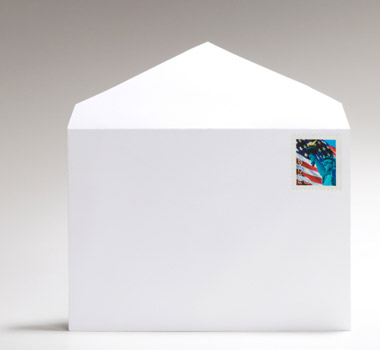
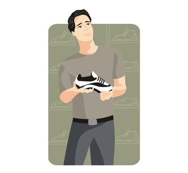

ほしい (欲しい)
| Polite | 欲しいです |
|---|---|
| Casual | 欲しい |
Same meaning: "want". Only the politeness changes.

YouTube · video
普通の工具箱が、欲しいんだよな。
"I just want a normal toolbox."
欲しい means want, for a thing: a toolbox, a coffee, new shoes. The thing you want takes が: 工具箱が欲しい.
It answers "What do you want?": a normal toolbox. んだよな adds "that's the thing, you know".
Add です to make it polite: 欲しいです. For an action, use たい instead: 買いたい (want to buy).
Examples
Your birthday is coming up. A friend asks.
新しいスマホが欲しいな。
"I want a new phone."
な = thinking out loud.
CasualAt a café, to the staff.
お水が欲しいんですが。
"Could I get some water?"
んですが turns it into a soft request.
PoliteShopping with a friend.
何が欲しい？
"What do you want?"
CasualA busy week. A coworker asks how you are.
ちょっと休みが欲しいです。
"I could use a little break."
PoliteSomeone offers you their old stuff.
そんなもの、欲しくないよ。
"I don't want that kind of thing."
It works like an い-adjective: 欲しい → 欲しくない.
CasualWith and without
コーヒーを飲む。
"I'm having a coffee." Just what I do.
コーヒーが欲しい。
"I want a coffee." What I wish I had.
Sentence mining

Core deck Core
この大きさの封筒が欲しいのですが。
"I'd like an envelope this size."
のですが = a polite way to ask.

Core deck Core
僕は新しい靴が欲しいです。
"I want new shoes."

YouTube · video
で、ショットガン自体は、ま、作れそうなんですけど、どうせだったらライフルが欲しいのよね。
"I could probably make the shotgun, but if I'm at it, I want a rifle."

Source unknown No source
切実に鉄が欲しいのに、鉄がどこにもないよ。
"I really need iron, but there's none anywhere."

Source unknown No source
いくらでも欲しいもんがあるけれども。
"There's no end of stuff I want, though."
もん = もの (thing), casual.

Source unknown No source
何が、序盤1番欲しいかな。
"What do I want most early on?"

Source unknown No source
リアルはいいの、夢が欲しいのね？
"Forget reality, I want dreams, okay?"
Core deck Core
何か飲み物が欲しいな。
"I could really use something to drink."